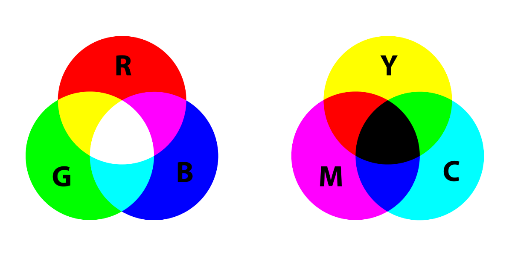

Niet alleen letters worden in een computer gecodeerd. Kleuren worden ook in een computer gecodeerd, dit gaat door middel van kleurmodellen. Een digitale afbeelding bestaat uit pixels, het woord komt voort uit de 2 woorden "picture en element". Heel veel pixles bij elkaar vormen samen een foto. Wanneer je inzoemt op een foto komen de pixels steeds beter in beeld. Om het invallende licht dus op te slaan wordt er gebruik gemaakt van kleurmodellen. De belangrijkste zijn RGB en het CMY-model. Het RGB-model is voor het digitaal afbeelden van afbeeldingen en het CMY-model is voor het afdrukken van afbeeldingen en wordt dus door de printer gebruikt.
Ieder beeldscherm bestaat uit pixels. Als je hier op inzoemt krijg je langzaam de pixles te zien. Als je Heeel ver inzoemt krijg je langzaam 3 kleuren te zien: red, green en blue(RGB). Deze kleuren kunnen verschillende sterkten aannemen om zo allerlei kleuren te vormen. Het mengen van de kleuren uit het RGB-model gaat niet hetzelfde als het mengen van verf. De RGB-model kleuren vormen samen wit terwijl het bij verf een heel andere kleur vormt.
De reden dat er een ander kleurmodel is voor het afdrukken van afbeeldingen is dat wanneer je met een RGB-model een afbeelding afdrukt het fout gaat. Dan voeg je namelijk kleur toe aan een witte achtergrond. Om deze reden is er een ander kleurmodel namelijk het CMY-model. Dit model kan wel kleur toevoegen op een witte achtergrond, hiervoor worden de kleuren cyaan, magenta en geel gebruikt. Deze kleuren samen vormen de kleur donkergrijs. Omdat met deze kleur geen zwart kan worden gevormd wordt er zwart toegevoegt, hierdoor ontstaat het CMYK-model. De K staat dan voor Key of Black